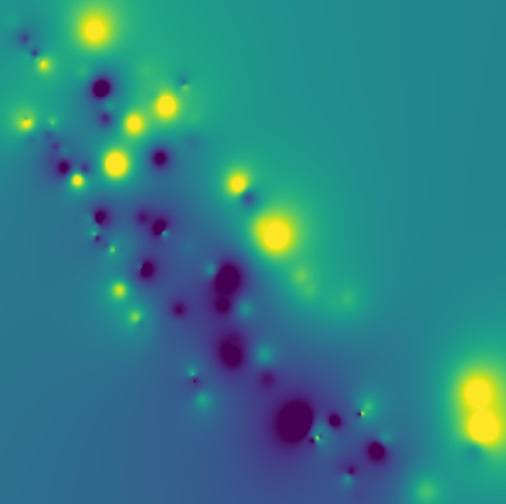

Tianshu Huang
I'm an ECE student at UT Austin interested in Data Science and Embedded Systems. Specifically, I'm interested in using data science techniques (especially machine learning) to engage in real time decision making.
I'm currently working with Prof. Bani Mallick, Anirban Bhattacharya, and Depdeep Pati at Texas A&M University on Bayesian Clustering using various MCMC-based methods; we hope to have a review paper out some time this year.
You can contact me at tianshu.huang@utexas.edu.
Data Science
Education
| University of Texas at Austin | Aug 2017 - Present |
GPA: 3.96
Courses:
Courses:
- Theory of Probability (Graduate)
- Geometric Foundations of Data Science (Graduate)
- Real Analysis I, II
- Introduction to Embedded Systems
- Computer Architecture
- Digital Logic Design
- Algorithms
- Linear Signals
- Probability and Stochastic Processes I (Graduate)
- Operating Systems
- Automatic Control
| Texas A&M University | May 2016 - Aug 2017 |
GPA: 3.96
Concurrent enrollment while attending high school
Courses:
Concurrent enrollment while attending high school
Courses:
- Discrete Math
- Linear Algebra
Work Experience
| Research Intern | June 2019 - Present |
Texas A&M University
Statistics
Research Area: Bayesian Clustering
| Research Intern | June 2019 - Present |
Texas A&M University
Construction Science
Research Area: Exploratory data analysis on bid data
| Test Analysis Systems Consultant | Aug 2018 - Present |
SLD Laser
Maintain web app built previously
| Full Stack Developer Intern | June 2018 - Aug 2018 |
SLD Laser
Built full-stack web app to visualize and analyze laser test data
Skills
Languages
Other ►
ARM Assembly
Verilog
Libraries and Frameworks
Platforms
Hardware
Board Design ►
EagleCAD
Board Fabrication
Mechanical ►
Sketchup
SolidWorks
3D Printing